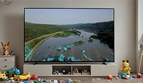

Cutting-edge expertise for your project.
After leading the development of a complex training portal for 10 years and integrating nearly fifteen asynchronous courses, I am now opening my workshop to offer this advanced expertise to a wider audience.
After leading the development of a complex training portal for 10 years and integrating nearly fifteen asynchronous courses, I am now opening my workshop to offer this advanced expertise to a wider audience.
My experience was forged by tackling major challenges: designing, developing, and managing the training portal for the Institute of Social Pediatrics in the Community (IPSC) and producing the online courses for its catalog.
Today, I make this expertise available to organizations, trainers, and companies aiming for pedagogical and technical innovation and excellence.
Registered members - primarily from the health, social services, legal, and community sectors.
Courses hosted and managed on the portal
Courses successfully completed by learners
SOFEDUC member and accredited courses (Barreau, MdFC, etc.)
Beyond a simple website, I build your complete training ecosystem: learner management, course sales, certifications, and custom dashboards.
I transform your raw content into an engaging, memorable, and effective learning experience, pushing the boundaries of standard authoring tools.
From the first line of code to deployment, you talk directly to the expert building your project. No more intermediaries.
You benefit from the same rigor and technical standards as those applied to an institutional portal.
Without agency overhead, your project moves faster, adapts easily, and benefits from an optimized cost structure.
Your project deserves a web presence that matches its quality. I design and develop modern, high-performance websites optimized for all devices.

As an independent creator, I combine cutting-edge expertise with an agile cost structure, offering you agency-level quality at a much more competitive rate.
Let's discuss your projectWith an interdisciplinary bachelor's degree in arts (2008) and a master's in media arts (2013), my passion is to translate ideas and emotions into powerful visual narratives. Every project is a new story to build.
Your project deserves proven expertise. I bring 15 years of video production experience to your service, including directing 4 feature-length documentaries shown in theaters, festival recognition for my short films, and producing dozens of diverse client projects. Whether your goal is to inform, move, or sell, my technical mastery and director's vision ensure an original and professional result.

Whether it's to capture the essence of an event, convey complex knowledge, strengthen your brand image, or tell a captivating story, I put my expertise at your service to create videos that make a lasting impression.
From conferences to shows, I capture the energy and essence of your events with an artistic eye and impeccable technical approach.
I design educational videos that engage, simplify complex concepts, and maximize learning retention.
Showcase your company with corporate videos that reflect your professionalism and effectively communicate your message.
I collaborate with artists and brands to transform bold ideas into unique visual creations. From music videos to short films and original presentation videos, my goal is to create a strong aesthetic that captivates and serves your vision.
Long-form travel stories, designed for the big screen and audience encounters.

À la croisée des chemins (2025)
De beautés et de légendes (2018)
Au pays des trolls (2016)

(2015)
Capture the energy of your company, events, or products with dynamism and professionalism.
Annual conference kickoff video

Promotional video for the launch of new models of industrial grinders
Transform knowledge into clear, engaging visual content perfectly suited for learning objectives.
Capsules for online training (IPSC)
Micro-learning capsules
My unique director's approach ensures artistic consistency and an efficient production process, without the overhead of a large agency.
Let's plan your shootSpecializing in video production and the creation of digital learning environments, I design immersive training experiences that combine pedagogy and technological innovation. My expertise ranges from the complete design of elearning platforms to the production of multimedia content and the integration of interactive resources.
Whether it's developing professionally recognized asynchronous training or producing corporate video content, I support my clients through all phases of their projects, from conceptualization to distribution, relying on a proven ed-tech approach and complete mastery of the audiovisual production chain.
Thank you very much. I will get back to you as soon as possible.